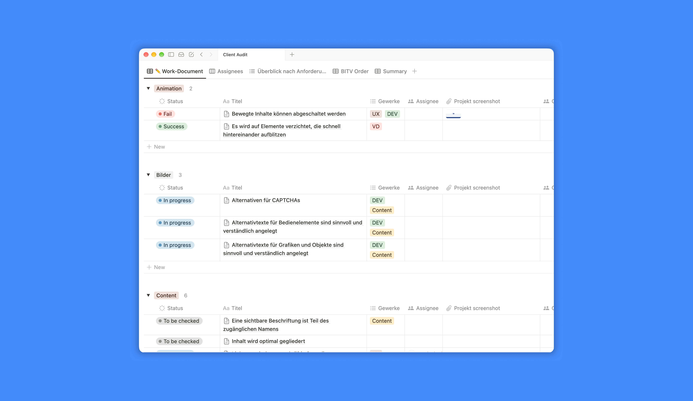

Internal initiative · culture change · BFSG
Accessibility task force /
preparing an agency for the new German law
An internal initiative to build accessibility knowledge and practices across the agency ahead of the German Accessibility Strengthening Act (BFSG). As part of the four-person core team, I built the accessibility toolbox and carried out audits of client products.
Context
The German Accessibility Strengthening Act (BFSG) implements the European Accessibility Act. Since June 2025 it has applied to many digital products and services, among them online shops and other e-commerce services.
At the agency, accessibility knowledge existed, but it was concentrated in a few people and was often applied late in a project, at review stage, when changes are more expensive. A small group of colleagues had started a task force on the topic. When I joined, we expanded its scope with the aim of making accessibility part of everyday project work, so that teams could address it from the start.
Approach
01
Community of practice. Together with the core team, I helped develop the task force into a community of practice open to everyone at the agency. It included a recurring open round, where colleagues could bring questions from their projects, consulting sessions for project teams, and workshops facilitated by other members of the team. The open format made it easier to raise accessibility early in a project instead of at review stage.
02
Toolbox. I built a toolbox for designers, developers and project managers, with guidelines, checklists and reference material for applying best practices and testing products. I structured it around the questions colleagues asked in their projects, so that it could be used directly during the work.

↑ The accessibility toolbox
03
Client audits. I audited client products against WCAG and the BFSG requirements and documented the necessary changes with a prioritisation. One of these audits included testing the booking and payment flow of a hotel website. The audits also fed back into the toolbox, as real products showed cases that general guidelines do not cover.
04
Supporting the development team. During the relaunch of the hotel website, I supported the development team throughout implementation. I answered questions as they came up and went through specific success criteria with them. This required me to understand in more depth how WCAG success criteria are implemented in code.
What I contributed
Community of practice
Helped develop the task force into a community of practice with recurring open rounds.
Toolbox
Built the toolbox: guidelines, checklists and reference material for designers, developers and project managers.
Audits
Carried out client audits against WCAG and the BFSG, including a booking and payment flow.
Developer support
Supported the development team during the implementation of a website relaunch.
Outcome
4
people in the core team
Open rounds
recurring, for the whole agency
BFSG
client audits under the new law
When I left the agency, the task force was still active. The toolbox was in use, the open rounds continued and accessibility audits had become part of the agency's services. Accessibility affects who can use a product, and it remains a central part of how I approach design.